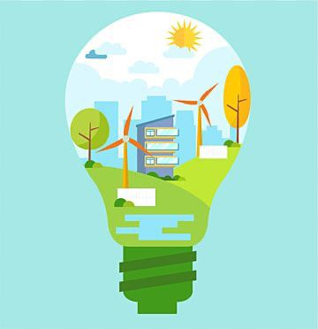
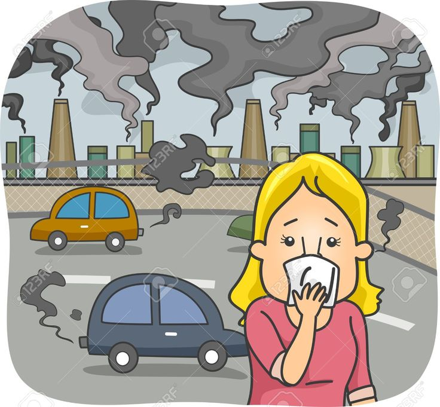
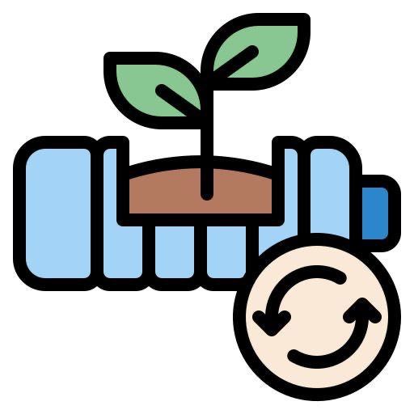

Solucion del problema
Están diseñadas para ser usadas en el procesamiento y transporte de productos en las áreas de manipulación agroalimentaria, construcción, medicamentos, agrícola, minería, automotriz, salud, petroquímica, naval o cualquier otra industria que requiera movilizar grandes volúmenes, esto nos permite programarlas para darnos la posibilidad de separar las basuras. Al hacer uso de esta herramienta el reciclaje sería más rápido y eficiente ya que todo se haría de manera mecánica
Al mejorar la eficiencia del proceso de reciclaje, las bandas transportadoras contribuyen a reducir la huella de carbono, minimizando la cantidad de residuos que llegan a los vertederos. Esto apoya los objetivos de sostenibilidad y la reducción de la presión ambiental.Las bandas transportadoras permiten el traslado rápido y continuo de materiales reciclables como papel, plástico, metales y desechos electrónicos, facilitando la clasificación en tiempo real. Esto es fundamental para optimizar los procesos de reciclaje en plantas que manejan grandes volúmenes de residuos.La clasificación automática de envases ayuda a estandarizar y acelerar el proceso de reciclaje, lo cual es importante a medida que aumenta la cantidad de residuos plásticos y de latas que deben procesarse. Esto contribuye a hacer más sostenible la gestión de estos materiales a nivel local y regional.
Al tener mayor control de los residuos, producto de nuestra banda transportadora, se lograrán varios cambios en el clima, uno de ellos y de los mas grandes y la reducción del calentamiento global o también reducir las emisiones de metano de los vertederos esto es gracias a la prevención de desecho y reciclaje (incluyendo el compostaje) desvía desechos orgánicos de los vertederos, reduce el metano que sería liberado al descomponerse estos materiales en un vertedero, También se tendrán beneficios en áreas más específicas, como en las emisiones de incineradores ya que el reciclaje y la prevención de desecho desvía materiales de los incineradores y por consiguiente reduce las emisiones de gases de invernadero originados por la combustión de desecho.

Hallazgos
El aumento de la población no solo aumenta el uso de combustibles fósiles, si no también el uso de otro tipo de objetos los cuales están hechos de materiales los cuales tardan mucho para degradarse (bolsas, botellas, baterías…) esto da como resultado un aumento de desechos directamente proporcional al aumento de la población, De las emisiones globales de CO2, la industria es responsable del 21%, aproximadamente, y sólo la producción de cuatro materiales (cemento, acero, plástico y aluminio) representa el 60% de estas emisiones. Sin embargo, el 50% de los residuos acaban en sitios que no son los más adecuados y, de ese porcentaje, cerca del 25% tiene como destino a los vertederos a cielo abierto o botaderos donde no pasan por el proceso de separación adecuado
En las últimas cinco décadas, a nivel global, la población se duplicó, el producto bruto interno se cuadriplicó y la extracción anual de materias primas aumentó de 27.000 millones de toneladas a 92.000 millones de toneladas, según detalló el informe Perspectivas de los Recursos Globales publicado en 2019 por el IRP. Dicho de otra manera, la extracción de recursos se ha triplicado desde 1970. Específicamente, el uso de minerales no metálicos se quintuplicó y el uso de combustibles fósiles aumentó el 45%.

Misión
Facilitar no solo una labor, si no tambien la vida de muchas personas o animales, al estar reciclando de manera tan mecanica permite tener varios beneficios, no solo a la imagen de quien use el servicio, si no tambien beneficios de salud para cualquier persona, son estas cosas, las cuales se buscan cumplir, las razones para desarrollar el proyecto
